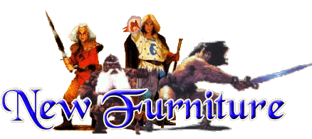

One of the things that set HeroQuest appart from other 'Dungeon'
games was the furniture. The tables, thrones, desks, etc. could be used to
create individual rooms, and to give the rooms a 'lived in'
feeling.
These files contain new furniture to use in your HeroQuest
games.
The Mine Cart
The mine cart can be used along with the Mine Tiles, or can
be used to give a 'mine' feel to a room on the regular HQ board. The mine cart
can be used in a mine shack or can be found wrecked outside of a mine.
The Crate
The crate can be used as general scenery, can be used to store things (like the treasure chest), or can be used to block off certain portions of the room. Stacked crates are handy for the GameMaster to hide monsters behind.
The Bed
by Chaos Orc
The bed can be used to create a more lived in atmosphere. The pillow is a great touch!